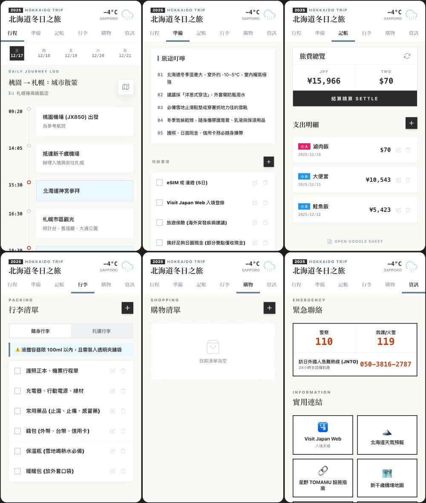

《聯8達》專欄
專欄 《聯8達》企業內部刊物 · 篇序 ⑤ 主題 從零到可用的實作教學 延伸閱讀 為了一杯 50 嵐，我竟然做了一個點餐系統
有讀者說「看起來很厲害，但跟我沒關係」，所以我改從日常旅遊重寫一篇，附模板讓人直接跟著做。

上一篇《為了一杯 50 嵐，我竟然做了一個點餐系統》刊出後，收到不少回饋。有些人開始私下問我 AI coding 的技巧，也有人跟我說：
「看起來很厲害，但感覺跟我沒什麼關係，我應該也用不到吧？」
我完全能理解「寫程式」、「做系統」這幾個字，對很多人來說，是跟自己完全沒有關係的一件事，甚至覺得我工作都做得好好的，為什麼要改變我熟悉的工作模式。
為了讓大家更能體會 AI coding 與人的真實距離，我們先不談工作而從日常，以一個普通人的角度出發，看 AI coding 能幫你做什麼？
這篇，我選了很多人「應該」會有感的主題——旅遊，一個為自己而生的旅遊 APP。我會在文末附上 AI Studio 及 Google Sheet 模板，讓你看完馬上能試做。
為自己量身打造的「隨身導遊」

先簡單介紹這次的旅遊 APP。基於隱私考量，APP 中的行程內容為網路上隨機找的旅行團資料，僅作為示範使用。
打開 APP，你會看到：
- 一個清楚的大標題
- 右上角顯示旅遊地點的即時天氣
- 下方是整個 APP 的核心功能區塊
包含：行程、準備、記帳、行李、購物、資訊，還有一個小彩蛋等大家自己去發現。
在「行程」頁中，可以用日曆切換每天的安排，並依實際旅遊日期彈性調整。你只需要把完整行程提供給 AI Studio，它就能自動幫你：調整成正確的日期、重新整理每日行程內容、同步更新「準備事項」「旅途叮嚀」「代辦清單」，甚至依照旅遊地點與氣候調整提醒內容。
例如：如果行程中有滑雪行程，準備清單就會自動出現「手套、毛帽」；如果有迪士尼樂園，資訊頁就會幫你補上官方連結。
當然，你也可以再手動修改，讓整個 APP 變成真正只為你存在的版本。
痛點擊破：多人分帳不再頭痛
在所有功能裡，我特別想分享的是「記帳」。
這個記帳功能支援多人分帳：一筆花費可以選擇平均分攤，或自行輸入每個人的金額，並且可以做到最終結算，誰該給誰多少日幣或台幣，完全省去自己算錢的大工程。
目前示範版本以雙人為主，但如果你是多人同行，只要跟 AI 說清楚實際人數、名稱，甚至幣別需求，並且修改 Google Sheet 欄位，就能延伸使用。
建立 APP 的整體流程
- 在左側對話區貼上你的完整旅遊行程
讓 AI Studio 先幫你生成並調整整體行程內容。
- 微調每日行程細節
確認日期、地點、順序是否符合你的實際安排。
- 檢查核心功能與清單
看看「準備事項、行李、代辦、資訊」是否有需要補充或刪減的地方。
確認整體結構沒問題後，再進行記帳資料串接。
手把手教學：三步驟完成你的記帳功能
記帳功能背後需要一個地方存資料。這次我使用的是 Google Sheet 當作資料庫。
延續上一篇提過的概念：只要涉及「寫入／讀取／修改／刪除」，就需要搭配 GAS（Google Apps Script）。
Step 1. 準備你的資料庫（Google Sheet）
- 開啟模板
- 點選「檔案 → 建立副本」
- 建立一份屬於你自己的記帳試算表
- 內容先不要刪，當作假資料顯示用
Step 2. 讓 AI 幫你寫程式（GAS）
建立完成後，回到 AI Studio，貼上以下這段 prompt：
我需要重新連結記帳的 Google Sheet。
欄位定義如下：A:日期, B:項目, C:付款人, D:台幣, E:日幣,
F:小A(台), G:小A(日), H:小B(台), I:小B(日), J:備註。
目標工作表名稱為：『示範用旅遊記帳』。
需求：資料需要可以雙向同步（APP 顯示與試算表一致）。
請提供對應的 GAS 程式碼，並告訴我是否需要重新部署？Step 3. 部署與串接
- AI 會生成一段程式碼給你
- 回到你的 Google Sheet，點選上方選單「擴充功能 → Apps Script」
- 將原本的內容清空，貼上 AI 給你的程式碼
- 關鍵動作：點擊「執行」測試
如果下方出現紅色錯誤訊息，請直接把錯誤訊息複製貼回給 AI，跟他說：「執行時出現這段錯誤，請修正。」它會幫你改好程式碼，再把改好的程式碼覆蓋原來的，重複上述動作。
- 確認無誤後，點擊右上角「部署 → 新增部署 → 網頁應用程式」
- 將取得的部署網址（Web App URL）貼回給 AI Studio，請它更新連結
只要這三步完成，你的 APP 就能即時讀取並寫入那張 Google Sheet 了。
遇到卡關？讓 Gemini 成為你的技術顧問
在開發過程中，你可能會遇到報錯、畫面跑版，或者資料抓不到。這時候請記住一個最重要的心法：
不要直接在 AI Studio 裡除錯，請移駕到 Gemini 詢問。
最安全的操作流程是：保持 AI Studio 視窗不動，另開一個 Gemini 視窗。把 Gemini 當成你的資深技術顧問，將錯誤訊息丟給它分析，等到找出原因後，請 Gemini 幫你擬定「給 AI Studio 的修正指令」，再把這段指令貼回 AI Studio，讓它自動幫你執行修改。
向 Gemini 提問時，不要只說「壞掉了」，而是盡可能告訴 AI 詳細情況、問題細節，AI 才能精準判斷，而不是通靈猜測——沒有交代清楚反而有越修越糟糕的可能。建議提供以下資訊：
- 你正在用什麼工具（例如：我正在使用 Google AI Studio 寫 GAS）
- 做的是哪一種 APP（例如：旅遊記帳 APP）
- 卡在哪個功能（例如：雙人分帳計算錯誤）
- 如果有錯誤代碼、錯誤歷程，直接貼上
有時候卡很久的問題，換一個 AI 幫你順一下邏輯，會突然迎刃而解。
文末原附有 AI Studio 與 Google Sheet 模板連結，公開版本請確認模板的分享權限後再放上。